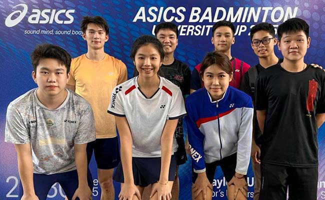
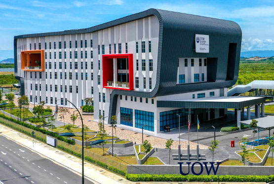
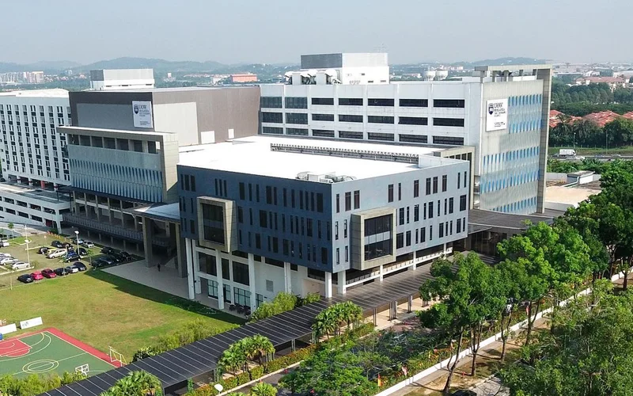
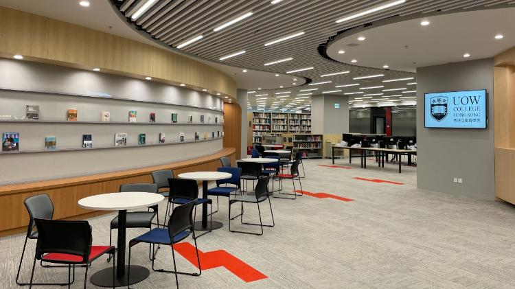

University overview
About University of Wollongong Malaysia
Established in 2004, University of Wollongong (UOW) has grown into a dynamic private university focused on delivering career-oriented education. Originally founded as the Masterskill School of Nursing and Healthcare, UOW achieved full university status in 2012 and expanded its academic portfolio into Business Management, Information Technology, Computer Science, and Allied Health Sciences.
Fully accredited by the Malaysian Qualifications Agency (MQA) and recognized internationally by the Accreditation Service for International Schools, Colleges & Universities (ASIC), UOW provides industry-focused diplomas, bachelor's degrees, and postgraduate qualifications designed to equip graduates with practical skills for the modern workforce.





International students
Study at University of Wollongong Malaysia as an international student
Compare University of Wollongong Malaysia courses, campuses, fees and entry requirements for your intended intake.
Programmes and tuition
University of Wollongong Malaysia UOW courses and fees for international students
| No | Programme | Intake | Duration | Total Fee (RM) | 1st Sem (RM) |
|---|---|---|---|---|---|
| 1 | Foundation in Arts / / QA/FA 9004 | Jan/June/Sep | 1 year | 31,250 | 17,370 |
| 2 | Foundation in Science | Jan/June/Sep | 1 year | 31,850 | 18,310 |
Schedule remarks:
**Professional Certification Fee is excluded. ***For minimum duration only. OTHER FEES: The above-mentioned fees are not inclusive of EMGS Fee and SST. EMGS Fee: RM4,100 (for Indonesian students-2 years Visa) and RM3,200 (for other nationalities- yearly). SST (Sales & Service Tax): All fees are subject to a 6% SST (excluding Caution Fee & Performance Assurance) for international students who are enrolled in Higher Learning Institutions in Malaysia. TERMS & CONDITIONS: This fee summary is correct at the time of printing, and shall take effect and be applicable only for new students who are registering for the 2026 intakes. Tuition fee per semester are indicative fees only. Total tuition fee per semester is dependent on the number of subjects a student undertakes for that particular semester. A late payment charge of RM10/-per day will be imposed on overdue payment. Registration Fee, EMGS Fee and Exam Fee (if applicable) are non-refundable. All payments can be made by credit card or cheque at the Bursary Department. Caution Fee is refundable upon completion or withdrawal from the programs on condition that no outstanding fees are owed to UOW Malaysia. In the event of al withdrawal/termination of studies, only 50% of the Caution Fee will be refunded (refer to UOW Malaysia's Bursary Policy). Resit/Repeat subject fee to be charged separately.
| No | Programme | Intake | Duration | Total Fee (RM) | 1st Sem (RM) |
|---|---|---|---|---|---|
| 1 | Diploma in Business | Jan/June/Sep | 2 years | 54,830 | 18,810 |
| 2 | Bachelor of Accountancy (Hons) MOAFE B | Jan/June/Sep | 3 years 2 months | 91,790 | 21,530 |
| 3 | Bachelor of Arts (Honours) in International Business Management | Jan/June/Sep | 3 years | 92,040 | 19,910 |
| 4 | Bachelor of Arts (Hons) Business Management | Jan/June/Sep | 3 years | 92,040 | 19,910 |
| 5 | Dual Award with University of Wollongong Australia Bachelor of Arts (Hons) Business Management MOAFA H | Jan/June/Sep | 3 years | 105,840 | 22,210 |
Schedule remarks:
**Professional Certification Fee is excluded. ***For minimum duration only. OTHER FEES: The above-mentioned fees are not inclusive of EMGS Fee and SST. EMGS Fee: RM4,100 (for Indonesian students-2 years Visa) and RM3,200 (for other nationalities- yearly). SST (Sales & Service Tax): All fees are subject to a 6% SST (excluding Caution Fee & Performance Assurance) for international students who are enrolled in Higher Learning Institutions in Malaysia. TERMS & CONDITIONS: This fee summary is correct at the time of printing, and shall take effect and be applicable only for new students who are registering for the 2026 intakes. Tuition fee per semester are indicative fees only. Total tuition fee per semester is dependent on the number of subjects a student undertakes for that particular semester. A late payment charge of RM10/-per day will be imposed on overdue payment. Registration Fee, EMGS Fee and Exam Fee (if applicable) are non-refundable. All payments can be made by credit card or cheque at the Bursary Department. Caution Fee is refundable upon completion or withdrawal from the programs on condition that no outstanding fees are owed to UOW Malaysia. In the event of al withdrawal/termination of studies, only 50% of the Caution Fee will be refunded (refer to UOW Malaysia's Bursary Policy). Resit/Repeat subject fee to be charged separately.
| No | Programme | Intake | Duration | Total Fee (RM) | 1st Sem (RM) |
|---|---|---|---|---|---|
| 1 | Diploma in Mass Communication 2006/08/27 BA | Jan/June/Sep | 2 years | 56,250 | 18,200 |
| 2 | Bachelor of Arts (Honours) in Media Production MQA 8079 | Jan/June/Sep | 3% years | 88,110 | 19,640 |
| 3 | Bachelor of Arts (Honours) in Public Relations | Jan/June/Sep | 3 years | 86,610 | 20,280 |
Schedule remarks:
**Professional Certification Fee is excluded. ***For minimum duration only. OTHER FEES: The above-mentioned fees are not inclusive of EMGS Fee and SST. EMGS Fee: RM4,100 (for Indonesian students-2 years Visa) and RM3,200 (for other nationalities- yearly). SST (Sales & Service Tax): All fees are subject to a 6% SST (excluding Caution Fee & Performance Assurance) for international students who are enrolled in Higher Learning Institutions in Malaysia. TERMS & CONDITIONS: This fee summary is correct at the time of printing, and shall take effect and be applicable only for new students who are registering for the 2026 intakes. Tuition fee per semester are indicative fees only. Total tuition fee per semester is dependent on the number of subjects a student undertakes for that particular semester. A late payment charge of RM10/-per day will be imposed on overdue payment. Registration Fee, EMGS Fee and Exam Fee (if applicable) are non-refundable. All payments can be made by credit card or cheque at the Bursary Department. Caution Fee is refundable upon completion or withdrawal from the programs on condition that no outstanding fees are owed to UOW Malaysia. In the event of al withdrawal/termination of studies, only 50% of the Caution Fee will be refunded (refer to UOW Malaysia's Bursary Policy). Resit/Repeat subject fee to be charged separately.
| No | Programme | Intake | Duration | Total Fee (RM) | 1st Sem (RM) |
|---|---|---|---|---|---|
| 1 | Diploma in Information Technology | Jan/June/Sep | 2.5 years | 53,130 ** | 18,720 |
| 2 | Bachelor of Information Systems (Honours) 400/60097/09/20 MQA/FABE | Jan/June/Sep | 3 years | 94,085 | 22,570 |
| 3 | Bachelor in Software Engineering (Honours) ROLANDONGO MOA/FATI | Jan/June/Sep | 3 years | 91,130 | 21,875 |
| 4 | Dual Award with University of Wollongong Australia Bachelor of Computer Science (Hons) | Jan/June/Sep | 3 years | 97,500 | 22,700 |
Schedule remarks:
**Professional Certification Fee is excluded. ***For minimum duration only. OTHER FEES: The above-mentioned fees are not inclusive of EMGS Fee and SST. EMGS Fee: RM4,100 (for Indonesian students-2 years Visa) and RM3,200 (for other nationalities- yearly). SST (Sales & Service Tax): All fees are subject to a 6% SST (excluding Caution Fee & Performance Assurance) for international students who are enrolled in Higher Learning Institutions in Malaysia. TERMS & CONDITIONS: This fee summary is correct at the time of printing, and shall take effect and be applicable only for new students who are registering for the 2026 intakes. Tuition fee per semester are indicative fees only. Total tuition fee per semester is dependent on the number of subjects a student undertakes for that particular semester. A late payment charge of RM10/-per day will be imposed on overdue payment. Registration Fee, EMGS Fee and Exam Fee (if applicable) are non-refundable. All payments can be made by credit card or cheque at the Bursary Department. Caution Fee is refundable upon completion or withdrawal from the programs on condition that no outstanding fees are owed to UOW Malaysia. In the event of al withdrawal/termination of studies, only 50% of the Caution Fee will be refunded (refer to UOW Malaysia's Bursary Policy). Resit/Repeat subject fee to be charged separately.
| No | Programme | Intake | Duration | Total Fee (RM) | 1st Sem (RM) |
|---|---|---|---|---|---|
| 1 | Diploma in Mechatronics Engineering 04/28 MQA/FA | Jan/June/Sep | 2.5 years | 59,250 | 21,500 |
| 2 | Bachelor of Mechatronics Engineering with Honours | Jan/June/Sep | 4 years | 124,250 | 25,550 |
Schedule remarks:
**Professional Certification Fee is excluded. ***For minimum duration only. OTHER FEES: The above-mentioned fees are not inclusive of EMGS Fee and SST. EMGS Fee: RM4,100 (for Indonesian students-2 years Visa) and RM3,200 (for other nationalities- yearly). SST (Sales & Service Tax): All fees are subject to a 6% SST (excluding Caution Fee & Performance Assurance) for international students who are enrolled in Higher Learning Institutions in Malaysia. TERMS & CONDITIONS: This fee summary is correct at the time of printing, and shall take effect and be applicable only for new students who are registering for the 2026 intakes. Tuition fee per semester are indicative fees only. Total tuition fee per semester is dependent on the number of subjects a student undertakes for that particular semester. A late payment charge of RM10/-per day will be imposed on overdue payment. Registration Fee, EMGS Fee and Exam Fee (if applicable) are non-refundable. All payments can be made by credit card or cheque at the Bursary Department. Caution Fee is refundable upon completion or withdrawal from the programs on condition that no outstanding fees are owed to UOW Malaysia. In the event of al withdrawal/termination of studies, only 50% of the Caution Fee will be refunded (refer to UOW Malaysia's Bursary Policy). Resit/Repeat subject fee to be charged separately.
| No | Programme | Duration Intake | Total Fee (RM) | 1st Sem (RM) |
|---|---|---|---|---|
| 1 | Diploma in Culinary Arts | Jan/June/Sep 2 years | 61,260 | 20,920 |
| 2 | Diploma in International Hotel Management | Jan/June/Sep 2 years | 55,650 | 22,130 |
| 3 | Bachelor of Arts (Honours) in International Hotel & Tourism Management | Jan/June/Sep 3 years | 90,150 | 21,550 |
| 4 | Bachelor of Arts (Honours) in International Culinary Arts | Jan/June/Sep 3 years | 92,050 | 22,202 |
| 5 | Dual Award with IMI International Management Institute, Switzerland Diploma in Culinary Arts | Jan/June/Sep 2 years | 65,260 | 20,920 |
| 6 | Diploma in International Hotel Management | Jan/June/Sep 2 years | 59,650 | 26,130 |
| 7 | Bachelor of Arts (Honours) in International Hotel & Tourism Management | Jan/June/Sep 3 years | 106,150 | 28,050 |
| 8 | Bachelor of Arts (Honours) in International Culinary Arts 47013/6/0013SJONIGAIFA | Jan/June/Sep 3 years | 108,050 | 28,702 |
Schedule remarks:
**Professional Certification Fee is excluded. ***For minimum duration only. OTHER FEES: The above-mentioned fees are not inclusive of EMGS Fee and SST. EMGS Fee: RM4,100 (for Indonesian students-2 years Visa) and RM3,200 (for other nationalities- yearly). SST (Sales & Service Tax): All fees are subject to a 6% SST (excluding Caution Fee & Performance Assurance) for international students who are enrolled in Higher Learning Institutions in Malaysia. TERMS & CONDITIONS: This fee summary is correct at the time of printing, and shall take effect and be applicable only for new students who are registering for the 2026 intakes. Tuition fee per semester are indicative fees only. Total tuition fee per semester is dependent on the number of subjects a student undertakes for that particular semester. A late payment charge of RM10/-per day will be imposed on overdue payment. Registration Fee, EMGS Fee and Exam Fee (if applicable) are non-refundable. All payments can be made by credit card or cheque at the Bursary Department. Caution Fee is refundable upon completion or withdrawal from the programs on condition that no outstanding fees are owed to UOW Malaysia. In the event of al withdrawal/termination of studies, only 50% of the Caution Fee will be refunded (refer to UOW Malaysia's Bursary Policy). Resit/Repeat subject fee to be charged separately.
Download HOSPITALITY, TOURISM & CULINARY ARTS - PENANG CAMPUS (ZIP)
| No | Programme | Intake | Duration | Total Fee (RM) | 1st Sem (RM) |
|---|---|---|---|---|---|
| 1 | Diploma in Interior Design A5024 | Jan/June/Sep | 2 years 8 months | 74,400 | 19,800 |
| 2 | Bachelor of Arts (Hons) in Interior Architecture MOAIFA B | Jan/June/Sep | 3.5 years | 99,750 | 24,200 |
Schedule remarks:
**Professional Certification Fee is excluded. ***For minimum duration only. OTHER FEES: The above-mentioned fees are not inclusive of EMGS Fee and SST. EMGS Fee: RM4,100 (for Indonesian students-2 years Visa) and RM3,200 (for other nationalities- yearly). SST (Sales & Service Tax): All fees are subject to a 6% SST (excluding Caution Fee & Performance Assurance) for international students who are enrolled in Higher Learning Institutions in Malaysia. TERMS & CONDITIONS: This fee summary is correct at the time of printing, and shall take effect and be applicable only for new students who are registering for the 2026 intakes. Tuition fee per semester are indicative fees only. Total tuition fee per semester is dependent on the number of subjects a student undertakes for that particular semester. A late payment charge of RM10/-per day will be imposed on overdue payment. Registration Fee, EMGS Fee and Exam Fee (if applicable) are non-refundable. All payments can be made by credit card or cheque at the Bursary Department. Caution Fee is refundable upon completion or withdrawal from the programs on condition that no outstanding fees are owed to UOW Malaysia. In the event of al withdrawal/termination of studies, only 50% of the Caution Fee will be refunded (refer to UOW Malaysia's Bursary Policy). Resit/Repeat subject fee to be charged separately.
| No | Programme | Intake | Duration | Total Fee (RM) | 1st Sem (RM) |
|---|---|---|---|---|---|
| 1 | Master of Business Administration (MBA) MOMFA 9512 NBASTIKE | Jan/June/Sep | 1.5-4 years | 50,760 | 26,520 |
| 2 | Master of Business | Jan/June/Sep | 2-4 years | 46,900 *** | 18,650 |
| 3 | Master in Computer Science | Jan/June/Sep | 2-4 years | 46,900 *** | 18,650 |
| 4 | Master of Science in Tourism Management | Jan/June/Sep | 2-4 years | 46,900 *** | 18,650 |
| 5 | Master of Science (Engineering) MOATARZ | Jan/June/Sep | 2-4 years | 48,100*** | 18,850 |
| 6 | Doctor of Philosophy (Business) | To be confirmed | 3-6 years | 62,850 *** | 18,650 |
| 7 | Doctor of Philosophy (Computer Science) | To be confirmed | 3-6 years | 62,850 *** | 18,650 |
| 8 | Doctor of Philosophy (Hospitality and Tourism) | To be confirmed | 3-6 years | 62,850*** | 18,650 |
| 9 | Doctor of Philosophy (Engineering) PROGRAM CODIE PENDUNG | To be confirmed | 3-6 years | 64,650*** | 18,850 |
Schedule remarks:
**Professional Certification Fee is excluded. ***For minimum duration only. OTHER FEES: The above-mentioned fees are not inclusive of EMGS Fee and SST. EMGS Fee: RM4,100 (for Indonesian students-2 years Visa) and RM3,200 (for other nationalities- yearly). SST (Sales & Service Tax): All fees are subject to a 6% SST (excluding Caution Fee & Performance Assurance) for international students who are enrolled in Higher Learning Institutions in Malaysia. TERMS & CONDITIONS: This fee summary is correct at the time of printing, and shall take effect and be applicable only for new students who are registering for the 2026 intakes. Tuition fee per semester are indicative fees only. Total tuition fee per semester is dependent on the number of subjects a student undertakes for that particular semester. A late payment charge of RM10/-per day will be imposed on overdue payment. Registration Fee, EMGS Fee and Exam Fee (if applicable) are non-refundable. All payments can be made by credit card or cheque at the Bursary Department. Caution Fee is refundable upon completion or withdrawal from the programs on condition that no outstanding fees are owed to UOW Malaysia. In the event of al withdrawal/termination of studies, only 50% of the Caution Fee will be refunded (refer to UOW Malaysia's Bursary Policy). Resit/Repeat subject fee to be charged separately.
| No | Programme | Intake | Duration | Total Fee (RM) | 1st Sem (RM) |
|---|---|---|---|---|---|
| 1 | Intensive English Program | Feb/Mar/May June/Aug/Sep/ Nov | 1 year | 34,900 | 13,900 |
Schedule remarks:
**Professional Certification Fee is excluded. ***For minimum duration only. OTHER FEES: The above-mentioned fees are not inclusive of EMGS Fee and SST. EMGS Fee: RM4,100 (for Indonesian students-2 years Visa) and RM3,200 (for other nationalities- yearly). SST (Sales & Service Tax): All fees are subject to a 6% SST (excluding Caution Fee & Performance Assurance) for international students who are enrolled in Higher Learning Institutions in Malaysia. TERMS & CONDITIONS: This fee summary is correct at the time of printing, and shall take effect and be applicable only for new students who are registering for the 2026 intakes. Tuition fee per semester are indicative fees only. Total tuition fee per semester is dependent on the number of subjects a student undertakes for that particular semester. A late payment charge of RM10/-per day will be imposed on overdue payment. Registration Fee, EMGS Fee and Exam Fee (if applicable) are non-refundable. All payments can be made by credit card or cheque at the Bursary Department. Caution Fee is refundable upon completion or withdrawal from the programs on condition that no outstanding fees are owed to UOW Malaysia. In the event of al withdrawal/termination of studies, only 50% of the Caution Fee will be refunded (refer to UOW Malaysia's Bursary Policy). Resit/Repeat subject fee to be charged separately.
| No | Programme | Intake | Duration | Total Fee (RM) | 1st Sem (RM) |
|---|---|---|---|---|---|
| 1 | Foundation Studies | Jan/June/Sep | 1 year | 36,730 | 19,840 |
| 2 | Foundation in Arts | Jan/June/Sep | 1 year | 36,730 | 19,840 |
| 3 | Foundation in Engineering | Jan/June/Sep | 1 year | 38,060 | 20,860 |
Schedule remarks:
**Examination Fee is excluded. ***For minimum duration only. OTHER FEES: The above-mentioned fees are not inclusive of EMGS Fee and SST. EMGS Fee: RM4,100 (for Indonesian students - 2 years Visa) and RM3,200 (for other nationalities - yearly). SST (Sales & Service Tax): All fees are subject to a 6% SST (excluding Caution Fee & Performance Assurance) for international students who are enrolled in Higher Learning Institutions in Malaysia. TERMS & CONDITIONS: This fee summary is correct at the time of printing, and shall take effect and be applicable only for new students who are registering for the 2026 intakes. Tuition fee per semester are indicative fees only. Total tuition fee per semester is dependent on the number of subjects a student undertakes for that particular semester. A late payment charge of RM10/-per day will be imposed on overdue payment. Registration and Exam Fees (if applicable) are non-refundable. Caution Fee is refundable upon completion or withdrawal from the programs on condition that no outstanding fees are owed to UOW Malaysia. In the event of a withdrawal/termination of studies, only 50% of the Caution Fee will be refunded (refer to UOW Malaysia's Bursary Policy). Performance Assurance fee is refundable upon successful completion of the program. However, it is non-refundable in the event of withdrawal or termination from the program. All payments can be made by cash, credit card or cheque at the Admissions & Bursary Department. Resit/Repeat subject fee to be charged separately.
| No | Programme | Intake | Duration | Total Fee (RM) | 1st Sem (RM) |
|---|---|---|---|---|---|
| 1 | Diploma in Business Administration AGRAS | Jan/June/Sep | 2 years | 59,900 | 20,880 |
| 2 | Diploma in Business Management - ODL Mode | Jan/June/Sep | 2 years | 33,300 | 7,400 |
| 3 | Bachelor of Accounting (Hons) | Jan/June/Sep | 3 years | 106,590 | 25,190 |
| 4 | Bachelor in Accounting & Finance (Hons) 0003/ MQA/FA | Jan/June/Sep | 3 years | 108,730 | 24,140 |
| 5 | Bachelor in Business Management - ODL Mode | Jan/June/Sep | 3 years | 64,770 | 9,315 |
| 6 | Bachelor of Business (Hons) Dual Award with University of Wollongong Australia | Jan/June/Sep | 3 years | 101,310 | 24,140 |
| 7 | Bachelor of Business (Hons) MGFA CAM | Jan/June/Sep | 3 years | 115,110 | 26,440 |
Schedule remarks:
**Examination Fee is excluded. ***For minimum duration only. OTHER FEES: The above-mentioned fees are not inclusive of EMGS Fee and SST. EMGS Fee: RM4,100 (for Indonesian students - 2 years Visa) and RM3,200 (for other nationalities - yearly). SST (Sales & Service Tax): All fees are subject to a 6% SST (excluding Caution Fee & Performance Assurance) for international students who are enrolled in Higher Learning Institutions in Malaysia. TERMS & CONDITIONS: This fee summary is correct at the time of printing, and shall take effect and be applicable only for new students who are registering for the 2026 intakes. Tuition fee per semester are indicative fees only. Total tuition fee per semester is dependent on the number of subjects a student undertakes for that particular semester. A late payment charge of RM10/-per day will be imposed on overdue payment. Registration and Exam Fees (if applicable) are non-refundable. Caution Fee is refundable upon completion or withdrawal from the programs on condition that no outstanding fees are owed to UOW Malaysia. In the event of a withdrawal/termination of studies, only 50% of the Caution Fee will be refunded (refer to UOW Malaysia's Bursary Policy). Performance Assurance fee is refundable upon successful completion of the program. However, it is non-refundable in the event of withdrawal or termination from the program. All payments can be made by cash, credit card or cheque at the Admissions & Bursary Department. Resit/Repeat subject fee to be charged separately.
| No | Programme | Intake | Duration | Total Fee (RM) | 1st Sem (RM) |
|---|---|---|---|---|---|
| 1 | Diploma in Communication & Media | Jan/June/Sep | 2 years | 61,570 | 19,480 |
| 2 | Diploma in Entertainment Arts | Jan/June/Sep | 2 years | 61,260 | 19,840 |
| 3 | Bachelor of Communication (Hons) MIDARA D | Jan/June/Sep | 3 years | 97,250 | 23,660 |
| 4 | Bachelor of Communication (Hons) in Media Production 0334021907E MOA FAMON | Jan/June/Sep | 3 years | 98,570 | 23,390 |
| 5 | Bachelor of Communication (Honours) (Public Relations) | Jan/June/Sep | 3 years | 98,570 | 21,320 |
| 6 | Bachelor of Creative Industry Management (Hons) 21) MOA/FA | Jan/June/Sep | 3 years | 99,650 | 23,930 |
Schedule remarks:
**Examination Fee is excluded. ***For minimum duration only. OTHER FEES: The above-mentioned fees are not inclusive of EMGS Fee and SST. EMGS Fee: RM4,100 (for Indonesian students - 2 years Visa) and RM3,200 (for other nationalities - yearly). SST (Sales & Service Tax): All fees are subject to a 6% SST (excluding Caution Fee & Performance Assurance) for international students who are enrolled in Higher Learning Institutions in Malaysia. TERMS & CONDITIONS: This fee summary is correct at the time of printing, and shall take effect and be applicable only for new students who are registering for the 2026 intakes. Tuition fee per semester are indicative fees only. Total tuition fee per semester is dependent on the number of subjects a student undertakes for that particular semester. A late payment charge of RM10/-per day will be imposed on overdue payment. Registration and Exam Fees (if applicable) are non-refundable. Caution Fee is refundable upon completion or withdrawal from the programs on condition that no outstanding fees are owed to UOW Malaysia. In the event of a withdrawal/termination of studies, only 50% of the Caution Fee will be refunded (refer to UOW Malaysia's Bursary Policy). Performance Assurance fee is refundable upon successful completion of the program. However, it is non-refundable in the event of withdrawal or termination from the program. All payments can be made by cash, credit card or cheque at the Admissions & Bursary Department. Resit/Repeat subject fee to be charged separately.
Download COMMUNICATION & CREATIVE ARTS - SELANGOR CAMPUS (ZIP)
| No | Programme | Intake | Duration | Total Fee (RM) | 1st Sem (RM) |
|---|---|---|---|---|---|
| 1 | Diploma in Computer Studies RO/DMA /27) A793 | Jan/June/Sep | 2 years | 60,660 | 22,230 |
| 2 | Diploma in Graphic Design Technology | Jan/June/Sep | 2 years | 58,410 | 20,470 |
| 3 | Bachelor of Information Systems (Honours) (Enterprise Information Systems) /G/004 QA/FA | Jan/June/Sep | 3 years | 105,140 | 22,640 |
| 4 | Bachelor of Software Engineering (Hons) MOA FASHI | Jan/June/Sep | 3 years | 102,710 | 22,640 |
| 5 | Bachelor of Arts (Honours) Digital Media Production R021160033 05 MOARA 90% | Jan/June/Sep | 3 years | 101,060 | 24,020 |
| 6 | Bachelor of Game Development (Honours) MOAYAT | Jan/June/Sep | 3 years | 105,710 | 23,990 |
| 7 | Dual Award with University of Wollongong Australia Bachelor of Computer Science (Hons) MARA 0432 | Jan/June/Sep | 3 years | 110,090 | 23,090 |
Schedule remarks:
**Examination Fee is excluded. ***For minimum duration only. OTHER FEES: The above-mentioned fees are not inclusive of EMGS Fee and SST. EMGS Fee: RM4,100 (for Indonesian students - 2 years Visa) and RM3,200 (for other nationalities - yearly). SST (Sales & Service Tax): All fees are subject to a 6% SST (excluding Caution Fee & Performance Assurance) for international students who are enrolled in Higher Learning Institutions in Malaysia. TERMS & CONDITIONS: This fee summary is correct at the time of printing, and shall take effect and be applicable only for new students who are registering for the 2026 intakes. Tuition fee per semester are indicative fees only. Total tuition fee per semester is dependent on the number of subjects a student undertakes for that particular semester. A late payment charge of RM10/-per day will be imposed on overdue payment. Registration and Exam Fees (if applicable) are non-refundable. Caution Fee is refundable upon completion or withdrawal from the programs on condition that no outstanding fees are owed to UOW Malaysia. In the event of a withdrawal/termination of studies, only 50% of the Caution Fee will be refunded (refer to UOW Malaysia's Bursary Policy). Performance Assurance fee is refundable upon successful completion of the program. However, it is non-refundable in the event of withdrawal or termination from the program. All payments can be made by cash, credit card or cheque at the Admissions & Bursary Department. Resit/Repeat subject fee to be charged separately.
| No | Programme | Intake | Duration | Total Fee (RM) | 1st Sem (RM) |
|---|---|---|---|---|---|
| 1 | Bachelor of Electrical and Electronics Engineering with Honours 22/ MOITA CHET | Jan/June/Sep | 4 years | 124,870 | 23,230 |
| 2 | Bachelor of Mechanical Engineering with Honours | Jan/June/Sep | 4 years | 124,500 | 22,860 |
| 3 | Bachelor of Mechatronics Engineering with Honours | Jan/June/Sep | 4 years | 124,500 | 22,860 |
Schedule remarks:
**Examination Fee is excluded. ***For minimum duration only. OTHER FEES: The above-mentioned fees are not inclusive of EMGS Fee and SST. EMGS Fee: RM4,100 (for Indonesian students - 2 years Visa) and RM3,200 (for other nationalities - yearly). SST (Sales & Service Tax): All fees are subject to a 6% SST (excluding Caution Fee & Performance Assurance) for international students who are enrolled in Higher Learning Institutions in Malaysia. TERMS & CONDITIONS: This fee summary is correct at the time of printing, and shall take effect and be applicable only for new students who are registering for the 2026 intakes. Tuition fee per semester are indicative fees only. Total tuition fee per semester is dependent on the number of subjects a student undertakes for that particular semester. A late payment charge of RM10/-per day will be imposed on overdue payment. Registration and Exam Fees (if applicable) are non-refundable. Caution Fee is refundable upon completion or withdrawal from the programs on condition that no outstanding fees are owed to UOW Malaysia. In the event of a withdrawal/termination of studies, only 50% of the Caution Fee will be refunded (refer to UOW Malaysia's Bursary Policy). Performance Assurance fee is refundable upon successful completion of the program. However, it is non-refundable in the event of withdrawal or termination from the program. All payments can be made by cash, credit card or cheque at the Admissions & Bursary Department. Resit/Repeat subject fee to be charged separately.
| No | Programme | Intake | Duration | Total Fee (RM) | 1st Sem (RM) |
|---|---|---|---|---|---|
| 1 | Certificate in Hotel Operations | Jan/June/Sep | 17 months | 31,240 | 18,920 |
| 2 | Dual Award with IMI International Management Institute, Switzerland Diploma in International Hotel Management | Jan/June/Sep | 2 years | 64,530 | 26,370 |
| 3 | Diploma in Culinary Arts | Jan/June/Sep | 2 years | 68,010 | 27,590 |
| 4 | Bachelor of Hospitality Management (Hons) | Jan/June/Sep | 3 years | 118,810 | 31,100 |
| 5 | Bachelor of Culinary Management (Hons) | Jan/June/Sep | 3 years | 117,800 | 31,160 |
Schedule remarks:
**Examination Fee is excluded. ***For minimum duration only. OTHER FEES: The above-mentioned fees are not inclusive of EMGS Fee and SST. EMGS Fee: RM4,100 (for Indonesian students - 2 years Visa) and RM3,200 (for other nationalities - yearly). SST (Sales & Service Tax): All fees are subject to a 6% SST (excluding Caution Fee & Performance Assurance) for international students who are enrolled in Higher Learning Institutions in Malaysia. TERMS & CONDITIONS: This fee summary is correct at the time of printing, and shall take effect and be applicable only for new students who are registering for the 2026 intakes. Tuition fee per semester are indicative fees only. Total tuition fee per semester is dependent on the number of subjects a student undertakes for that particular semester. A late payment charge of RM10/-per day will be imposed on overdue payment. Registration and Exam Fees (if applicable) are non-refundable. Caution Fee is refundable upon completion or withdrawal from the programs on condition that no outstanding fees are owed to UOW Malaysia. In the event of a withdrawal/termination of studies, only 50% of the Caution Fee will be refunded (refer to UOW Malaysia's Bursary Policy). Performance Assurance fee is refundable upon successful completion of the program. However, it is non-refundable in the event of withdrawal or termination from the program. All payments can be made by cash, credit card or cheque at the Admissions & Bursary Department. Resit/Repeat subject fee to be charged separately.
Download HOSPITALITY, TOURISM & CULINARY ARTS - SELANGOR CAMPUS (ZIP)
| No | Programme | Intake | Duration | Total Fee (RM) | 1st Sem (RM) |
|---|---|---|---|---|---|
| 1 | Bachelor of Laws 3+0 External with University of London, UK | June/Sep | 3 years | $66,150^{**}$ | $30,500^{**}$ |
Schedule remarks:
**Examination Fee is excluded. ***For minimum duration only. OTHER FEES: The above-mentioned fees are not inclusive of EMGS Fee and SST. EMGS Fee: RM4,100 (for Indonesian students - 2 years Visa) and RM3,200 (for other nationalities - yearly). SST (Sales & Service Tax): All fees are subject to a 6% SST (excluding Caution Fee & Performance Assurance) for international students who are enrolled in Higher Learning Institutions in Malaysia. TERMS & CONDITIONS: This fee summary is correct at the time of printing, and shall take effect and be applicable only for new students who are registering for the 2026 intakes. Tuition fee per semester are indicative fees only. Total tuition fee per semester is dependent on the number of subjects a student undertakes for that particular semester. A late payment charge of RM10/-per day will be imposed on overdue payment. Registration and Exam Fees (if applicable) are non-refundable. Caution Fee is refundable upon completion or withdrawal from the programs on condition that no outstanding fees are owed to UOW Malaysia. In the event of a withdrawal/termination of studies, only 50% of the Caution Fee will be refunded (refer to UOW Malaysia's Bursary Policy). Performance Assurance fee is refundable upon successful completion of the program. However, it is non-refundable in the event of withdrawal or termination from the program. All payments can be made by cash, credit card or cheque at the Admissions & Bursary Department. Resit/Repeat subject fee to be charged separately.
| No | Programme | Intake | Duration | Total Fee (RM) | 1st Sem (RM) |
|---|---|---|---|---|---|
| 1 | Certificate in Business Communication | Jan/June/Sep | 1.5 years | 29,630 | 16,830 |
| 2 | Diploma in Early Childhood Education | Jan/June/Sep | 2-3 years | 46,620 | 18,870 |
Schedule remarks:
**Examination Fee is excluded. ***For minimum duration only. OTHER FEES: The above-mentioned fees are not inclusive of EMGS Fee and SST. EMGS Fee: RM4,100 (for Indonesian students - 2 years Visa) and RM3,200 (for other nationalities - yearly). SST (Sales & Service Tax): All fees are subject to a 6% SST (excluding Caution Fee & Performance Assurance) for international students who are enrolled in Higher Learning Institutions in Malaysia. TERMS & CONDITIONS: This fee summary is correct at the time of printing, and shall take effect and be applicable only for new students who are registering for the 2026 intakes. Tuition fee per semester are indicative fees only. Total tuition fee per semester is dependent on the number of subjects a student undertakes for that particular semester. A late payment charge of RM10/-per day will be imposed on overdue payment. Registration and Exam Fees (if applicable) are non-refundable. Caution Fee is refundable upon completion or withdrawal from the programs on condition that no outstanding fees are owed to UOW Malaysia. In the event of a withdrawal/termination of studies, only 50% of the Caution Fee will be refunded (refer to UOW Malaysia's Bursary Policy). Performance Assurance fee is refundable upon successful completion of the program. However, it is non-refundable in the event of withdrawal or termination from the program. All payments can be made by cash, credit card or cheque at the Admissions & Bursary Department. Resit/Repeat subject fee to be charged separately.
| No | Programme | Intake | Duration | Total Fee (RM) | 1st Sem (RM) |
|---|---|---|---|---|---|
| 1 | Diploma in Nursing /7234/00304 27 MQA/FAT538 | June/Sep/Oct | 3 years | 64,955 | 22,175 |
| 2 | Diploma in Physiotherapy | June/Sep/Oct | 3 years | 62,580 | 20,780 |
Schedule remarks:
**Examination Fee is excluded. ***For minimum duration only. OTHER FEES: The above-mentioned fees are not inclusive of EMGS Fee and SST. EMGS Fee: RM4,100 (for Indonesian students - 2 years Visa) and RM3,200 (for other nationalities - yearly). SST (Sales & Service Tax): All fees are subject to a 6% SST (excluding Caution Fee & Performance Assurance) for international students who are enrolled in Higher Learning Institutions in Malaysia. TERMS & CONDITIONS: This fee summary is correct at the time of printing, and shall take effect and be applicable only for new students who are registering for the 2026 intakes. Tuition fee per semester are indicative fees only. Total tuition fee per semester is dependent on the number of subjects a student undertakes for that particular semester. A late payment charge of RM10/-per day will be imposed on overdue payment. Registration and Exam Fees (if applicable) are non-refundable. Caution Fee is refundable upon completion or withdrawal from the programs on condition that no outstanding fees are owed to UOW Malaysia. In the event of a withdrawal/termination of studies, only 50% of the Caution Fee will be refunded (refer to UOW Malaysia's Bursary Policy). Performance Assurance fee is refundable upon successful completion of the program. However, it is non-refundable in the event of withdrawal or termination from the program. All payments can be made by cash, credit card or cheque at the Admissions & Bursary Department. Resit/Repeat subject fee to be charged separately.
| No | Programme | Intake | Duration | Total Fee (RM) | 1st Sem (RM) |
|---|---|---|---|---|---|
| 1 | Foundation in Accountancy (ACCA - FIA) | Jan/July | 1 year | 21,150** | 15,850** |
| 2 | Association of Chartered Certified Accountants (ACCA) | Jan/July | 2.5 years | 37,950 | 16,100 |
Schedule remarks:
**Examination Fee is excluded. ***For minimum duration only. OTHER FEES: The above-mentioned fees are not inclusive of EMGS Fee and SST. EMGS Fee: RM4,100 (for Indonesian students - 2 years Visa) and RM3,200 (for other nationalities - yearly). SST (Sales & Service Tax): All fees are subject to a 6% SST (excluding Caution Fee & Performance Assurance) for international students who are enrolled in Higher Learning Institutions in Malaysia. TERMS & CONDITIONS: This fee summary is correct at the time of printing, and shall take effect and be applicable only for new students who are registering for the 2026 intakes. Tuition fee per semester are indicative fees only. Total tuition fee per semester is dependent on the number of subjects a student undertakes for that particular semester. A late payment charge of RM10/-per day will be imposed on overdue payment. Registration and Exam Fees (if applicable) are non-refundable. Caution Fee is refundable upon completion or withdrawal from the programs on condition that no outstanding fees are owed to UOW Malaysia. In the event of a withdrawal/termination of studies, only 50% of the Caution Fee will be refunded (refer to UOW Malaysia's Bursary Policy). Performance Assurance fee is refundable upon successful completion of the program. However, it is non-refundable in the event of withdrawal or termination from the program. All payments can be made by cash, credit card or cheque at the Admissions & Bursary Department. Resit/Repeat subject fee to be charged separately.
| No | Programme | Intake | Duration | Total Fee (RM) | 1st Sem (RM) |
|---|---|---|---|---|---|
| 1 | Postgraduate Certificate in Business Administration | Jan/June/Sep | 1 year | 33,500 | 24,150 |
| 2 | Postgraduate Diploma in Enterprise Risk Management | Jan/June/Sep | 1 year | 45,700 | 24,150 |
| 3 | Master of Business Administration (MBA) GAFA 8000 30/7/000 | Jan/June/Sep | 16 months | 55,200 | 24,150 |
| 4 | Master of Business Administration (MBA) - ODL Mode | Jan/June/Sep | 16 months | 30,380 | 8,600 |
| 5 | Master of Arts (Communication Management) | Jan/June/Sep | 16 months | 52,350 | 20,350 |
| 6 | Master of Design (Innovation) | Jan/June/Sep | 16 months | 55,200 | 20,500 |
| 7 | Master of Arts (Social Science) MOAF | Jan/June/Sep | 2-4 years | 49,200 *** | 19,700 |
| 8 | Master of Arts R2/400 | Jan/June/Sep | 2-4 years | 49,200 *** | 19,700 |
| 9 | Master of Science | Jan/June/Sep | 2-4 years | 55,200*** | 20,700 |
| 10 | Doctor of Philosophy (Engineering) | Jan/June/Sep | 3-6 years | 77,300 *** | 20,700 |
| 11 | Doctor of Philosophy (Business) /0400000 | Jan/June/Sep | 3-6 years | 68,300 *** | 19,700 |
| 12 | Doctor of Philosophy (Social Science) | Jan/June/Sep | 3-6 years | 68,300*** | 19,700 |
| 13 | Doctor of Philosophy (Creative Arts & Media) | Jan/June/Sep | 3-6 years | 68,300*** | 19,700 |
| 14 | Doctor of Philosophy (Computing & Innovation) /PA | Jan/June/Sep | 3-6 years | 68,300 *** | 19,700 |
Schedule remarks:
**Examination Fee is excluded. ***For minimum duration only. OTHER FEES: The above-mentioned fees are not inclusive of EMGS Fee and SST. EMGS Fee: RM4,100 (for Indonesian students - 2 years Visa) and RM3,200 (for other nationalities - yearly). SST (Sales & Service Tax): All fees are subject to a 6% SST (excluding Caution Fee & Performance Assurance) for international students who are enrolled in Higher Learning Institutions in Malaysia. TERMS & CONDITIONS: This fee summary is correct at the time of printing, and shall take effect and be applicable only for new students who are registering for the 2026 intakes. Tuition fee per semester are indicative fees only. Total tuition fee per semester is dependent on the number of subjects a student undertakes for that particular semester. A late payment charge of RM10/-per day will be imposed on overdue payment. Registration and Exam Fees (if applicable) are non-refundable. Caution Fee is refundable upon completion or withdrawal from the programs on condition that no outstanding fees are owed to UOW Malaysia. In the event of a withdrawal/termination of studies, only 50% of the Caution Fee will be refunded (refer to UOW Malaysia's Bursary Policy). Performance Assurance fee is refundable upon successful completion of the program. However, it is non-refundable in the event of withdrawal or termination from the program. All payments can be made by cash, credit card or cheque at the Admissions & Bursary Department. Resit/Repeat subject fee to be charged separately.
| No | Programme | Duration | Total Fee (RM) | 1st Sem (RM) |
|---|---|---|---|---|
| 1 | Foundation in Arts | 1 year | 31,250 | 17,370 |
| 2 | Foundation in Science | 1 year | 31,850 | 18,310 |
Schedule remarks:
Other Fees: EMGS Fee RM4,100 (for Indonesian students-2 years Visa) and RM3,200 (for other nationalities-yearly). SST (Sales & Service Tax): All fees are subject to a 6% SST (excluding Caution Fee & Performance Assurance) for international students. Terms & Conditions: Tuition fee per semester are indicative fees only. Total tuition fee per semester is dependent on the number of subjects a student undertakes for that particular semester. A late payment charge of RM10/-per day will be imposed on overdue payment. Registration Fee, EMGS Fee and Exam Fee (if applicable) are non-refundable. Caution Fee is refundable upon completion or withdrawal on condition that no outstanding fees are owed. Resit/Repeat subject fee to be charged separately.
| No | Programme | Duration | Total Fee (RM) | 1st Sem (RM) |
|---|---|---|---|---|
| 1 | Diploma in Business | 2 years | 54,830 | 18,810 |
| 2 | Bachelor of Accountancy (Hons) | 3 years 2 months | 91,790 | 21,530 |
| 3 | Bachelor of Arts (Honours) in International Business Management | 3 years | 92,040 | 19,910 |
| 4 | Bachelor of Arts (Hons) Business Management | 3 years | 92,040 | 19,910 |
| 5 | Dual Award with University of Wollongong Australia Bachelor of Arts (Hons) Business Management | 3 years | 105,840 | 22,210 |
Schedule remarks:
Other Fees: EMGS Fee RM4,100 (for Indonesian students-2 years Visa) and RM3,200 (for other nationalities-yearly). SST (Sales & Service Tax): All fees are subject to a 6% SST (excluding Caution Fee & Performance Assurance) for international students. Terms & Conditions: Tuition fee per semester are indicative fees only. Total tuition fee per semester is dependent on the number of subjects a student undertakes for that particular semester. A late payment charge of RM10/-per day will be imposed on overdue payment. Registration Fee, EMGS Fee and Exam Fee (if applicable) are non-refundable. Caution Fee is refundable upon completion or withdrawal on condition that no outstanding fees are owed. Resit/Repeat subject fee to be charged separately.
| No | Programme | Duration | Total Fee (RM) | 1st Sem (RM) |
|---|---|---|---|---|
| 1 | Diploma in Mass Communication | 2 years | 56,250 | 18,200 |
| 2 | Bachelor of Arts (Honours) in Media Production | 3.5 years | 88,110 | 19,640 |
| 3 | Bachelor of Arts (Honours) in Public Relations | 3 years | 86,610 | 20,280 |
Schedule remarks:
Other Fees: EMGS Fee RM4,100 (for Indonesian students-2 years Visa) and RM3,200 (for other nationalities-yearly). SST (Sales & Service Tax): All fees are subject to a 6% SST (excluding Caution Fee & Performance Assurance) for international students. Terms & Conditions: Tuition fee per semester are indicative fees only. Total tuition fee per semester is dependent on the number of subjects a student undertakes for that particular semester. A late payment charge of RM10/-per day will be imposed on overdue payment. Registration Fee, EMGS Fee and Exam Fee (if applicable) are non-refundable. Caution Fee is refundable upon completion or withdrawal on condition that no outstanding fees are owed. Resit/Repeat subject fee to be charged separately.
| No | Programme | Duration | Total Fee (RM) | 1st Sem (RM) |
|---|---|---|---|---|
| 1 | Diploma in Information Technology | 2.5 years | 53,130 | 18,720 |
| 2 | Bachelor of Information Systems (Honours) | 3 years | 94,085 | 22,570 |
| 3 | Bachelor in Software Engineering (Honours) | 3 years | 91,130 | 21,875 |
| 4 | Dual Award with University of Wollongong Australia Bachelor of Computer Science (Hons) | 3 years | 97,500 | 22,700 |
Schedule remarks:
**Professional Certification Fee is excluded. Other Fees: EMGS Fee RM4,100 (for Indonesian students-2 years Visa) and RM3,200 (for other nationalities-yearly). SST (Sales & Service Tax): All fees are subject to a 6% SST (excluding Caution Fee & Performance Assurance) for international students. Terms & Conditions: Tuition fee per semester are indicative fees only. Total tuition fee per semester is dependent on the number of subjects a student undertakes for that particular semester. A late payment charge of RM10/-per day will be imposed on overdue payment. Registration Fee, EMGS Fee and Exam Fee (if applicable) are non-refundable. Caution Fee is refundable upon completion or withdrawal on condition that no outstanding fees are owed. Resit/Repeat subject fee to be charged separately.
| No | Programme | Duration | Total Fee (RM) | 1st Sem (RM) |
|---|---|---|---|---|
| 1 | Diploma in Mechatronics Engineering | 2.5 years | 59,250 | 21,500 |
| 2 | Bachelor of Mechatronics Engineering with Honours | 4 years | 124,250 | 25,550 |
Schedule remarks:
Other Fees: EMGS Fee RM4,100 (for Indonesian students-2 years Visa) and RM3,200 (for other nationalities-yearly). SST (Sales & Service Tax): All fees are subject to a 6% SST (excluding Caution Fee & Performance Assurance) for international students. Terms & Conditions: Tuition fee per semester are indicative fees only. Total tuition fee per semester is dependent on the number of subjects a student undertakes for that particular semester. A late payment charge of RM10/-per day will be imposed on overdue payment. Registration Fee, EMGS Fee and Exam Fee (if applicable) are non-refundable. Caution Fee is refundable upon completion or withdrawal on condition that no outstanding fees are owed. Resit/Repeat subject fee to be charged separately.
| No | Programme | Duration | Total Fee (RM) | 1st Sem (RM) |
|---|---|---|---|---|
| 1 | Diploma in Culinary Arts | 2 years | 61,260 | 20,920 |
| 2 | Diploma in International Hotel Management | 2 years | 55,650 | 22,130 |
| 3 | Bachelor of Arts (Honours) in International Hotel & Tourism Management | 3 years | 90,150 | 21,550 |
| 4 | Bachelor of Arts (Honours) in International Culinary Arts | 3 years | 92,050 | 22,202 |
| 5 | Dual Award with IMI International Management Institute, Switzerland Diploma in Culinary Arts | 2 years | 65,260 | 20,920 |
| 6 | Dual Award with IMI International Management Institute, Switzerland Diploma in International Hotel Management | 2 years | 59,650 | 26,130 |
| 7 | Dual Award with IMI International Management Institute, Switzerland Bachelor of Arts (Honours) in International Hotel & Tourism Management | 3 years | 106,150 | 28,050 |
| 8 | Dual Award with IMI International Management Institute, Switzerland Bachelor of Arts (Honours) in International Culinary Arts | 3 years | 108,050 | 28,702 |
Schedule remarks:
Other Fees: EMGS Fee RM4,100 (for Indonesian students-2 years Visa) and RM3,200 (for other nationalities-yearly). SST (Sales & Service Tax): All fees are subject to a 6% SST (excluding Caution Fee & Performance Assurance) for international students. Terms & Conditions: Tuition fee per semester are indicative fees only. Total tuition fee per semester is dependent on the number of subjects a student undertakes for that particular semester. A late payment charge of RM10/-per day will be imposed on overdue payment. Registration Fee, EMGS Fee and Exam Fee (if applicable) are non-refundable. Caution Fee is refundable upon completion or withdrawal on condition that no outstanding fees are owed. Resit/Repeat subject fee to be charged separately.
Download HOSPITALITY, TOURISM & CULINARY ARTS (PENANG CAMPUS) (ZIP)
| No | Programme | Duration | Total Fee (RM) | 1st Sem (RM) |
|---|---|---|---|---|
| 1 | Diploma in Interior Design | 2 years 8 months | 74,400 | 19,800 |
| 2 | Bachelor of Arts (Hons) in Interior Architecture | 3.5 years | 99,750 | 24,200 |
Schedule remarks:
Other Fees: EMGS Fee RM4,100 (for Indonesian students-2 years Visa) and RM3,200 (for other nationalities-yearly). SST (Sales & Service Tax): All fees are subject to a 6% SST (excluding Caution Fee & Performance Assurance) for international students. Terms & Conditions: Tuition fee per semester are indicative fees only. Total tuition fee per semester is dependent on the number of subjects a student undertakes for that particular semester. A late payment charge of RM10/-per day will be imposed on overdue payment. Registration Fee, EMGS Fee and Exam Fee (if applicable) are non-refundable. Caution Fee is refundable upon completion or withdrawal on condition that no outstanding fees are owed. Resit/Repeat subject fee to be charged separately.
| No | Programme | Duration | Total Fee (RM) | 1st Sem (RM) |
|---|---|---|---|---|
| 1 | Master of Business Administration (MBA) | 1.5-4 years | 50,760 | 26,520 |
| 2 | Master of Business | 2-4 years | 46,900 | 18,650 |
| 3 | Master in Computer Science | 2-4 years | 46,900 | 18,650 |
| 4 | Master of Science in Tourism Management | 2-4 years | 46,900 | 18,650 |
| 5 | Master of Science (Engineering) | 2-4 years | 48,100 | 18,850 |
| 6 | Doctor of Philosophy (Business) | 3-6 years | 62,850 | 18,650 |
| 7 | Doctor of Philosophy (Computer Science) | 3-6 years | 62,850 | 18,650 |
| 8 | Doctor of Philosophy (Hospitality and Tourism) | 3-6 years | 62,850 | 18,650 |
| 9 | Doctor of Philosophy (Engineering) | 3-6 years | 64,650 | 18,850 |
Schedule remarks:
***For minimum duration only. Other Fees: EMGS Fee RM4,100 (for Indonesian students-2 years Visa) and RM3,200 (for other nationalities-yearly). SST (Sales & Service Tax): All fees are subject to a 6% SST (excluding Caution Fee & Performance Assurance) for international students. Terms & Conditions: Tuition fee per semester are indicative fees only. Total tuition fee per semester is dependent on the number of subjects a student undertakes for that particular semester. A late payment charge of RM10/-per day will be imposed on overdue payment. Registration Fee, EMGS Fee and Exam Fee (if applicable) are non-refundable. Caution Fee is refundable upon completion or withdrawal on condition that no outstanding fees are owed. Resit/Repeat subject fee to be charged separately.
| No | Programme | Duration | Total Fee (RM) | 1st Sem (RM) |
|---|---|---|---|---|
| 1 | Intensive English Program | 1 year | 34,900 | 13,900 |
Schedule remarks:
Other Fees: EMGS Fee RM4,100 (for Indonesian students-2 years Visa) and RM3,200 (for other nationalities-yearly). SST (Sales & Service Tax): All fees are subject to a 6% SST (excluding Caution Fee & Performance Assurance) for international students. Terms & Conditions: Tuition fee per semester are indicative fees only. Total tuition fee per semester is dependent on the number of subjects a student undertakes for that particular semester. A late payment charge of RM10/-per day will be imposed on overdue payment. Registration Fee, EMGS Fee and Exam Fee (if applicable) are non-refundable. Caution Fee is refundable upon completion or withdrawal on condition that no outstanding fees are owed. Resit/Repeat subject fee to be charged separately.
| No | Programme | Duration | Total Fee (RM) | 1st Sem (RM) |
|---|---|---|---|---|
| 1 | Foundation Studies | 1 year | 36,730 | 19,840 |
| 2 | Foundation in Arts | 1 year | 36,730 | 19,840 |
| 3 | Foundation in Engineering | 1 year | 38,060 | 20,860 |
Schedule remarks:
Other Fees: EMGS Fee: RM4,100 (for Indonesian students - 2 years Visa) and RM3,200 (for other nationalities - yearly). SST (Sales & Service Tax): All fees are subject to a 6% SST (excluding Caution Fee & Performance Assurance) for international students. Terms & Conditions: Tuition fee per semester are indicative fees only. Total tuition fee per semester is dependent on the number of subjects a student undertakes for that particular semester. A late payment charge of RM10/-per day will be imposed on overdue payment. Registration and Exam Fees (if applicable) are non-refundable. Caution Fee is refundable upon completion or withdrawal from the programs on condition that no outstanding fees are owed to UOW Malaysia. Performance Assurance fee is refundable upon successful completion of the program. Resit/Repeat subject fee to be charged separately.
| No | Programme | Duration | Total Fee (RM) | 1st Sem (RM) |
|---|---|---|---|---|
| 1 | Diploma in Business Administration | 2 years | 59,900 | 20,880 |
| 2 | Diploma in Business Management - ODL Mode | 2 years | 33,300 | 7,400 |
| 3 | Bachelor of Accounting (Hons) | 3 years | 106,590 | 25,190 |
| 4 | Bachelor in Accounting & Finance (Hons) | 3 years | 108,730 | 24,140 |
| 5 | Bachelor in Business Management - ODL Mode | 3 years | 64,770 | 9,315 |
| 6 | Bachelor of Business (Hons) Dual Award with University of Wollongong Australia | 3 years | 101,310 | 24,140 |
| 7 | Bachelor of Business (Hons) | 3 years | 115,110 | 26,440 |
Schedule remarks:
Other Fees: EMGS Fee: RM4,100 (for Indonesian students - 2 years Visa) and RM3,200 (for other nationalities - yearly). SST (Sales & Service Tax): All fees are subject to a 6% SST (excluding Caution Fee & Performance Assurance) for international students. Terms & Conditions: Tuition fee per semester are indicative fees only. Total tuition fee per semester is dependent on the number of subjects a student undertakes for that particular semester. A late payment charge of RM10/-per day will be imposed on overdue payment. Registration and Exam Fees (if applicable) are non-refundable. Caution Fee is refundable upon completion or withdrawal from the programs on condition that no outstanding fees are owed to UOW Malaysia. Performance Assurance fee is refundable upon successful completion of the program. Resit/Repeat subject fee to be charged separately.
| No | Programme | Duration | Total Fee (RM) | 1st Sem (RM) |
|---|---|---|---|---|
| 1 | Diploma in Communication & Media | 2 years | 61,570 | 19,480 |
| 2 | Diploma in Entertainment Arts | 2 years | 61,260 | 19,840 |
| 3 | Bachelor of Communication (Hons) | 3 years | 97,250 | 23,660 |
| 4 | Bachelor of Communication (Hons) in Media Production | 3 years | 98,570 | 23,390 |
| 5 | Bachelor of Communication (Honours) (Public Relations) | 3 years | 98,570 | 21,320 |
| 6 | Bachelor of Creative Industry Management (Hons) | 3 years | 99,650 | 23,930 |
Schedule remarks:
Other Fees: EMGS Fee: RM4,100 (for Indonesian students - 2 years Visa) and RM3,200 (for other nationalities - yearly). SST (Sales & Service Tax): All fees are subject to a 6% SST (excluding Caution Fee & Performance Assurance) for international students. Terms & Conditions: Tuition fee per semester are indicative fees only. Total tuition fee per semester is dependent on the number of subjects a student undertakes for that particular semester. A late payment charge of RM10/-per day will be imposed on overdue payment. Registration and Exam Fees (if applicable) are non-refundable. Caution Fee is refundable upon completion or withdrawal from the programs on condition that no outstanding fees are owed to UOW Malaysia. Performance Assurance fee is refundable upon successful completion of the program. Resit/Repeat subject fee to be charged separately.
Download COMMUNICATION & CREATIVE ARTS (SELANGOR CAMPUS) (ZIP)
| No | Programme | Duration | Total Fee (RM) | 1st Sem (RM) |
|---|---|---|---|---|
| 1 | Diploma in Computer Studies | 2 years | 60,660 | 22,230 |
| 2 | Diploma in Graphic Design Technology | 2 years | 58,410 | 20,470 |
| 3 | Bachelor of Information Systems (Honours) (Enterprise Information Systems) | 3 years | 105,140 | 22,640 |
| 4 | Bachelor of Software Engineering (Hons) | 3 years | 102,710 | 22,640 |
| 5 | Bachelor of Arts (Honours) Digital Media Production | 3 years | 101,060 | 24,020 |
| 6 | Bachelor of Game Development (Honours) | 3 years | 105,710 | 23,990 |
| 7 | Dual Award with University of Wollongong Australia Bachelor of Computer Science (Hons) | 3 years | 110,090 | 23,090 |
Schedule remarks:
Other Fees: EMGS Fee: RM4,100 (for Indonesian students - 2 years Visa) and RM3,200 (for other nationalities - yearly). SST (Sales & Service Tax): All fees are subject to a 6% SST (excluding Caution Fee & Performance Assurance) for international students. Terms & Conditions: Tuition fee per semester are indicative fees only. Total tuition fee per semester is dependent on the number of subjects a student undertakes for that particular semester. A late payment charge of RM10/-per day will be imposed on overdue payment. Registration and Exam Fees (if applicable) are non-refundable. Caution Fee is refundable upon completion or withdrawal from the programs on condition that no outstanding fees are owed to UOW Malaysia. Performance Assurance fee is refundable upon successful completion of the program. Resit/Repeat subject fee to be charged separately.
| No | Programme | Duration | Total Fee (RM) | 1st Sem (RM) |
|---|---|---|---|---|
| 1 | Bachelor of Electrical and Electronics Engineering with Honours | 4 years | 124,870 | 23,230 |
| 2 | Bachelor of Mechanical Engineering with Honours | 4 years | 124,500 | 22,860 |
| 3 | Bachelor of Mechatronics Engineering with Honours | 4 years | 124,500 | 22,860 |
Schedule remarks:
Other Fees: EMGS Fee: RM4,100 (for Indonesian students - 2 years Visa) and RM3,200 (for other nationalities - yearly). SST (Sales & Service Tax): All fees are subject to a 6% SST (excluding Caution Fee & Performance Assurance) for international students. Terms & Conditions: Tuition fee per semester are indicative fees only. Total tuition fee per semester is dependent on the number of subjects a student undertakes for that particular semester. A late payment charge of RM10/-per day will be imposed on overdue payment. Registration and Exam Fees (if applicable) are non-refundable. Caution Fee is refundable upon completion or withdrawal from the programs on condition that no outstanding fees are owed to UOW Malaysia. Performance Assurance fee is refundable upon successful completion of the program. Resit/Repeat subject fee to be charged separately.
| No | Programme | Duration | Total Fee (RM) | 1st Sem (RM) |
|---|---|---|---|---|
| 1 | Certificate in Hotel Operations | 17 months | 31,240 | 18,920 |
| 2 | Dual Award with IMI International Management Institute, Switzerland Diploma in International Hotel Management | 2 years | 64,530 | 26,370 |
| 3 | Dual Award with IMI International Management Institute, Switzerland Diploma in Culinary Arts | 2 years | 68,010 | 27,590 |
| 4 | Bachelor of Hospitality Management (Hons) | 3 years | 118,810 | 31,100 |
| 5 | Bachelor of Culinary Management (Hons) | 3 years | 117,800 | 31,160 |
Schedule remarks:
Other Fees: EMGS Fee: RM4,100 (for Indonesian students - 2 years Visa) and RM3,200 (for other nationalities - yearly). SST (Sales & Service Tax): All fees are subject to a 6% SST (excluding Caution Fee & Performance Assurance) for international students. Terms & Conditions: Tuition fee per semester are indicative fees only. Total tuition fee per semester is dependent on the number of subjects a student undertakes for that particular semester. A late payment charge of RM10/-per day will be imposed on overdue payment. Registration and Exam Fees (if applicable) are non-refundable. Caution Fee is refundable upon completion or withdrawal from the programs on condition that no outstanding fees are owed to UOW Malaysia. Performance Assurance fee is refundable upon successful completion of the program. Resit/Repeat subject fee to be charged separately.
Download HOSPITALITY, TOURISM & CULINARY ARTS (SELANGOR CAMPUS) (ZIP)
| No | Programme | Duration | Total Fee (RM) | 1st Sem (RM) |
|---|---|---|---|---|
| 1 | Bachelor of Laws 3+0 External with University of London, UK | 3 years | 66,150 | 30,500 |
Schedule remarks:
**Examination Fee is excluded. Other Fees: EMGS Fee: RM4,100 (for Indonesian students - 2 years Visa) and RM3,200 (for other nationalities - yearly). SST (Sales & Service Tax): All fees are subject to a 6% SST (excluding Caution Fee & Performance Assurance) for international students. Terms & Conditions: Tuition fee per semester are indicative fees only. Total tuition fee per semester is dependent on the number of subjects a student undertakes for that particular semester. A late payment charge of RM10/-per day will be imposed on overdue payment. Registration and Exam Fees (if applicable) are non-refundable. Caution Fee is refundable upon completion or withdrawal from the programs on condition that no outstanding fees are owed to UOW Malaysia. Performance Assurance fee is refundable upon successful completion of the program. Resit/Repeat subject fee to be charged separately.
| No | Programme | Duration | Total Fee (RM) | 1st Sem (RM) |
|---|---|---|---|---|
| 1 | Certificate in Business Communication | 1.5 years | 29,630 | 16,830 |
| 2 | Diploma in Early Childhood Education | 2-3 years | 46,620 | 18,870 |
Schedule remarks:
Other Fees: EMGS Fee: RM4,100 (for Indonesian students - 2 years Visa) and RM3,200 (for other nationalities - yearly). SST (Sales & Service Tax): All fees are subject to a 6% SST (excluding Caution Fee & Performance Assurance) for international students. Terms & Conditions: Tuition fee per semester are indicative fees only. Total tuition fee per semester is dependent on the number of subjects a student undertakes for that particular semester. A late payment charge of RM10/-per day will be imposed on overdue payment. Registration and Exam Fees (if applicable) are non-refundable. Caution Fee is refundable upon completion or withdrawal from the programs on condition that no outstanding fees are owed to UOW Malaysia. Performance Assurance fee is refundable upon successful completion of the program. Resit/Repeat subject fee to be charged separately.
| No | Programme | Duration | Total Fee (RM) | 1st Sem (RM) |
|---|---|---|---|---|
| 1 | Diploma in Nursing | 3 years | 64,955 | 22,175 |
| 2 | Diploma in Physiotherapy | 3 years | 62,580 | 20,780 |
Schedule remarks:
Other Fees: EMGS Fee: RM4,100 (for Indonesian students - 2 years Visa) and RM3,200 (for other nationalities - yearly). SST (Sales & Service Tax): All fees are subject to a 6% SST (excluding Caution Fee & Performance Assurance) for international students. Terms & Conditions: Tuition fee per semester are indicative fees only. Total tuition fee per semester is dependent on the number of subjects a student undertakes for that particular semester. A late payment charge of RM10/-per day will be imposed on overdue payment. Registration and Exam Fees (if applicable) are non-refundable. Caution Fee is refundable upon completion or withdrawal from the programs on condition that no outstanding fees are owed to UOW Malaysia. Performance Assurance fee is refundable upon successful completion of the program. Resit/Repeat subject fee to be charged separately.
| No | Programme | Duration | Total Fee (RM) | 1st Sem (RM) |
|---|---|---|---|---|
| 1 | Foundation in Accountancy (ACCA - FIA) | 1 year | 21,150 | 15,850 |
| 2 | Association of Chartered Certified Accountants (ACCA) | 2.5 years | 37,950 | 16,100 |
Schedule remarks:
**Examination Fee is excluded. Other Fees: EMGS Fee: RM4,100 (for Indonesian students - 2 years Visa) and RM3,200 (for other nationalities - yearly). SST (Sales & Service Tax): All fees are subject to a 6% SST (excluding Caution Fee & Performance Assurance) for international students. Terms & Conditions: Tuition fee per semester are indicative fees only. Total tuition fee per semester is dependent on the number of subjects a student undertakes for that particular semester. A late payment charge of RM10/-per day will be imposed on overdue payment. Registration and Exam Fees (if applicable) are non-refundable. Caution Fee is refundable upon completion or withdrawal from the programs on condition that no outstanding fees are owed to UOW Malaysia. Performance Assurance fee is refundable upon successful completion of the program. Resit/Repeat subject fee to be charged separately.
| No | Programme | Duration | Total Fee (RM) | 1st Sem (RM) |
|---|---|---|---|---|
| 1 | Postgraduate Certificate in Business Administration | 1 year | 33,500 | 24,150 |
| 2 | Postgraduate Diploma in Enterprise Risk Management | 1 year | 45,700 | 24,150 |
| 3 | Master of Business Administration (MBA) | 16 months | 55,200 | 24,150 |
| 4 | Master of Business Administration (MBA) - ODL Mode | 16 months | 30,380 | 8,600 |
| 5 | Master of Arts (Communication Management) | 16 months | 52,350 | 20,350 |
| 6 | Master of Design (Innovation) | 16 months | 55,200 | 20,500 |
| 7 | Master of Arts (Social Science) | 2-4 years | 49,200 | 19,700 |
| 8 | Master of Arts | 2-4 years | 49,200 | 19,700 |
| 9 | Master of Science | 2-4 years | 55,200 | 20,700 |
| 10 | Doctor of Philosophy (Engineering) | 3-6 years | 77,300 | 20,700 |
| 11 | Doctor of Philosophy (Business) | 3-6 years | 68,300 | 19,700 |
| 12 | Doctor of Philosophy (Social Science) | 3-6 years | 68,300 | 19,700 |
| 13 | Doctor of Philosophy (Creative Arts & Media) | 3-6 years | 68,300 | 19,700 |
| 14 | Doctor of Philosophy (Computing & Innovation) | 3-6 years | 68,300 | 19,700 |
Schedule remarks:
***For minimum duration only. Other Fees: EMGS Fee: RM4,100 (for Indonesian students - 2 years Visa) and RM3,200 (for other nationalities - yearly). SST (Sales & Service Tax): All fees are subject to a 6% SST (excluding Caution Fee & Performance Assurance) for international students. Terms & Conditions: Tuition fee per semester are indicative fees only. Total tuition fee per semester is dependent on the number of subjects a student undertakes for that particular semester. A late payment charge of RM10/-per day will be imposed on overdue payment. Registration and Exam Fees (if applicable) are non-refundable. Caution Fee is refundable upon completion or withdrawal from the programs on condition that no outstanding fees are owed to UOW Malaysia. Performance Assurance fee is refundable upon successful completion of the program. Resit/Repeat subject fee to be charged separately.
Download fee schedule (ZIP)
Stored fee document for University of Wollongong (UOW). Check the printed validity and terms.
UOW Malaysia rankings: QS World, Asia & Malaysia
Verified . Each figure below names its ranking edition.
- QS World 2027
- #195 Australian parent institution
- QS Asia 2026
- Not verified
- Malaysia · QS World 2027
- Not listed
The QS World figure shown here belongs to the University of Wollongong in Australia, the parent institution. It is not a separate rank for UOW Malaysia and does not give UOW Malaysia a national position.
“Not listed” refers to the named QS table. “Not verified” means we could not confirm a position for that edition; it does not establish that the institution is unaccredited.
Malaysia positions are calculated among the 32 institutions listed by QS under Malaysia in its World 2027 table. This is not a separate government ranking. An = sign marks a tie. Institutions in the same world-rank band share a national position range because their exact order is not published.
QS World and QS Asia use different methods. Overall university positions do not establish the ranking of a particular BBA, IT, MBA or other program.
Explore the campus
Campus gallery
Questions and answers
Frequently Asked Questions About University of Wollongong Malaysia UOW
View ranking sources
University of Wollongong Malaysia (UOW Malaysia) - QS profile · QS World University Rankings 2027 - official results spreadsheet (v1.1) · QS Asia University Rankings 2026 - Malaysia · QS World University Rankings 2027 - release corrections
What is the QS World ranking of University of Wollongong Malaysia (UOW Malaysia) in 2027?
University of Wollongong (Australia) is #195 in QS World University Rankings 2027. This is the parent institution's rank, not a separate rank for UOW Malaysia.
Sources: University of Wollongong Malaysia (UOW Malaysia) - QS profile · QS World University Rankings 2027 - official results spreadsheet (v1.1)
What is the QS Asia ranking of University of Wollongong Malaysia (UOW Malaysia) in 2026?
A QS Asia University Rankings 2026 position for UOW Malaysia has not been verified in our sources.
What is the ranking of University of Wollongong Malaysia (UOW Malaysia) in Malaysia?
UOW Malaysia has no separate Malaysia position in the QS World 2027 table because it has no institution entry listed under Malaysia. This is a position within the QS World table, not a separate government ranking or a QS Asia position.
Sources: QS World University Rankings 2027 - official results spreadsheet (v1.1) · QS World University Rankings 2027 - release corrections
Do QS Stars, SETARA or partner rankings give University of Wollongong Malaysia (UOW Malaysia) an overall QS rank?
QS Stars and SETARA are ratings, not numerical positions in a QS league table. A subject ranking applies to that subject, and a partner university rank belongs to the named partner. Check the institution, ranking system and edition before comparing.
Sources: QS Stars rating system
What are UOW Malaysia's tuition fees for international students?
Find your program and campus in the fee chart on this page, then read the relevant student category, fee columns and remarks. The schedule uses labels including Total Fee (RM), 1st Sem (RM). Different programs and fee periods cannot be combined into one reliable tuition price. Amounts not shown need an intake-specific quotation.
What are UOW Malaysia's tuition fees for Bangladeshi students?
Bangladeshi applicants should check the international-student rate for their program and intake. This page does not establish a separate Bangladesh-only tuition rate or guarantee eligibility for a discount. Check nationality-specific charges, deposits, visa costs and scholarship conditions in the schedule and your written offer.
Does the UOW Malaysia fee chart show fees per semester or per year?
Use the exact period printed in each column. A first-year payment, fee per semester and full-program total describe different costs. Where a semester or annual breakdown is absent, request a payment schedule; dividing a program total can give the wrong instalment amount.
Where can I find the official UOW Malaysia fee chart?
The download links on this page open the stored fee documents. One-Step is a student guidance website. Confirm the document's edition, campus, student category and validity with the university before accepting an offer or paying. The university's current written fee schedule and offer determine the amount payable.
Which year do the UOW Malaysia fees apply to?
Use any effective dates and intake restrictions stated in the fee documents and course remarks. A single validity year has not been confirmed for every table on this page. A recent page update does not mean all underlying fees are for the current year.
Does UOW Malaysia offer scholarships for international students?
Check any scholarship, adjusted tuition or discount columns alongside their conditions. A listed reduction is not an automatic award for every international or Bangladeshi applicant. Ask for the scholarship name, eligibility, application deadline, renewal conditions and final payable fee in writing.